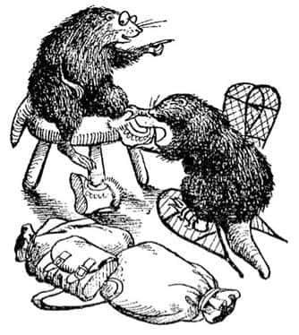

Büyü Bozuluyor
Şimdi biz Bay ve Bayan Kunduz ile diğer üç çocuğa geri dönelim. Bay Kunduz “Kaybedecek zaman yok” der demez, Bayan Kunduz dışında herkes paltolarını giymeye başlamıştı. Bayan Kunduz’sa birkaç torba bulup masanın üzerine koymuştu ve: “Haydi Bay Kunduz, şu jambonu getir. Çay şurada, oradaki şekeri ve kibritleri de ver. Biri şu köşedeki çömlekten iki-üç somun çıkarsa iyi olur” diye emirler yağdırıyordu.
“Ne yapıyorsunuz Bayan Kunduz?” diye sordu Susan hayretle.
“Hepimiz için bir şeyler bohçalıyorum tatlım” dedi Bayan Kunduz soğuk bir ifadeyle. “Yiyecek bir şeyimiz olmadan yolculuğa çıkmayı düşünmüyorsun değil mi?”
“Fakat zamanımız yok” dedi Susan, paltosunun yakasını ilikleyerek. “Cadı her an gelebilir.”
“Ben de öyle düşünüyorum” diye söze katıldı Bay Kunduz.
“Saçmalamayın lütfen” dedi karısı. “Düşün bir kere Bay Kunduz. En azından on beş dakikadan önce buraya gelemez.”
“Ama ondan mümkün olduğunca çok uzaklaşmamız gerekmez mi?” dedi Peter, “Eğer Taş Masa’ya ondan önce ulaşmak istiyorsak.”
“Şunu unutmayın Bayan Kunduz” dedi Susan. “Buraya bakıp da bizim gittiğimizi öğrenir öğrenmez hızla harekete geçecektir.”
“Bunu elbette yapacaktır” dedi Bayan Kunduz. “Ancak biz ne yaparsak yapalım Taş Masa’ya ondan önce ulaşamayız, çünkü onun kızağı var; biz ise yayayız.”
“Öyleyse hiç umudumuz yok mu?” dedi Susan.
“Şimdi telaşlanmaya gerek yok, tatlım” dedi Bayan Kunduz. “Çekmeceden yarım düzine mendil alıver. Elbette umudumuz var. Ondan önce oraya ulaşamayız fakat saklanabiliriz. Ve onun tahmin edemeyeceği yollardan giderek belki de oraya ulaşabiliriz.”
“Haklısın Bayan Kunduz” dedi kocası, “Ama burayı terk etmenin zamanı.”
“Sen de telaşlanmaya başlama Bay Kunduz” dedi kadın. “İşte. Böylesi daha iyi. Beş çuvalımız var ve en küçüğü en küçüğümüz için: Bu senin tatlım” diye ekledi Lucy’e bakarak.

“Şey, hemen hemen hazırım” diye cevapladı Bayan Kunduz sonunda. Kocasının kar çizmelerini giymesine yardım etmesine izin vermişti. “Sanırım dikiş makinesi çok ağırdır taşımak için.”
“Evet ağır” dedi Bay Kunduz. “Çok ağır. Kaçarken onu kullanabileceğini düşünmüyorsun sanırım?”
“O Cadı’nın onunla oynaması ve muhtemelen bozması ya da çalması düşüncesine dayanamıyorum” dedi Bayan Kunduz.
“Ah, lütfen, lütfen, lütfen acele edin!” dedi çocuklar. Sonunda hepsi dışarıya çıktı. Bay Kunduz kapıyı kilitledi (“onu biraz oyalar” dedi) ve hepsi de yüklerini sırtlayıp yola çıktılar.
Yola koyulduklarında kar yağışı durmuş ve ay çıkmıştı. Tek sıra halinde yürüyorlardı – önde Bay Kunduz, sonra Lucy, ardında Peter, sonra Susan ve en sonda da Bayan Kunduz. Bay Kunduz onları bendin üzerinden nehrin sağ yakasına ve sonra nehrin kıyısında ağaçların arasındaki keçiyoluna yöneltti. Ay ışığında parıldayan vadinin iki yakası da başlarının üzerinde yükseliyordu.
“En iyisi olabildiğince aşağıda, burada yürümek” dedi. “Cadı yukarıda kalmak zorunda, çünkü kızağını aşağıya getiremez.”
Tam da rahat bir koltukta oturup pencereden seyredilecek güzel bir manzaraydı bu. Koşulların farklı olmasına karşın Lucy başlangıçta pek sevmişti bunu. Fakat yürüdükçe – ve yürüdükçe – ve taşıdığı çuvalın daha da ağırlaştığını hissetmeye başladıkça yola nasıl devam edeceğini merak etmeye başlamıştı. Buzdan çağlayanlarıyla donmuş nehrin göz kamaştırıcı parlaklığına, ağaç tepelerindeki beyaz kütlelere, heybetle parlayan aya ve sayısız yıldızlara bakmayı bıraktı. Sanki hiç durmayacakmış gibi karda kırt, kırt, kırt yürüyen Bay Kunduz’un küçük kısa bacaklarına bakmaya başladı. Sonra ay kayboldu ve yeniden kar yağmaya başladı. Ve sonunda Lucy o kadar yoruldu ki, sanki hem uyuyor hem de yürüyordu. Aniden Bay Kunduz’un nehrin kıyısından sağa doğru uzaklaştığını ve onları dik bir yamaçtan yukarıya, çok sık çalılıklara doğru yönelttiğini fark etti. Yorgunluktan kapanan gözlerini açtığında Bay Kunduz’un, tam üstüne gelmeden fark edemeyeceğiniz, çalılıkların altında gizli küçük bir kovukta kaybolmak üzere olduğunu gördü. Aslında, ne olduğunu anladığında, onun sadece yassı ve kısa kuyruğu görülmekteydi. Sonra tırmalama ve soluma sesleri duydu. Lucy hemen çömelip onun arkasından içeriye sürünerek girdi. Az sonra hepsi de içerdeydiler.
“Burası da neresi?” dedi Peter yorgun ve soluk sesiyle karanlıkta (Umarım soluk ses demekle ne anlatmak istediğimi anlıyorsunuz).
“Kunduzların tehlike anında gizlendikleri eski bir yer!” dedi Bay Kunduz “Ve çok büyük bir sır. Belki yeterli değil, ama birkaç saat uyumamız gerek.”
“Yola çıkarken hepiniz öyle sabırsız bir telaş içinde olmasaydınız birkaç yastık getirirdim” dedi Bayan Kunduz.
Lucy buranın Bay Tumnus’unki gibi şirin bir mağara olmadığını düşünüyordu – sadece rutubetsiz bir kovuktu ve toprak kokuyordu. Öyle küçüktü ki yan yana uzandıklarında bir yığın giysi gibi görünüyorlardı. Hem küçük bir yer olması, hem de uzun yürüyüşlerinde ısınmış olmaları nedeniyle içerisi oldukça rahat ve sıcacık geldi onlara. Bir de mağaranın zemini biraz daha düzgün olsaydı! Sonra Bayan Kunduz karanlıkta küçük, yassı bir şişe çıkardı ve herkes bu şişeden bir şey içti. Bu onları öksürtüp biraz da şaşkınlıktan saçmasapan şeyler söylemelerine neden olmuş ve boğazlarını yakmıştı, fakat içtikten sonra içleri ısınmış ve herkes hemen uykuya dalmıştı.
Lucy biraz üşümüş, korkunç bir şekilde her tarafı tutulmuş olarak ve sıcak bir banyo özlemiyle uyandığında sanki bir dakika geçmiş gibiydi (gerçekte saatler sonraydı). Sonra yanağını gıdıklayan bir çift uzun bıyığı hissetti ve kovuğun ağzından içeriye süzülen soğuk günışığını gördü. Biraz sonra mahmurluğu üzerinden atmış, bu arada diğerleri de uyanmıştı. Şimdi hepsi oturuyor ve gözleri açık bir şekilde dün gece yürürken düşündükleri (bazen de duyduklarını sandıkları) sesi dinliyorlardı. Bu, şıngırdayan zillerin sesiydi.
Bay Kunduz sesleri duyduğu an kovuktan dışarıya şimşek gibi fırlamıştı. Lucy gibi siz de, bunun aptalca bir şey olduğunu sanabilirsiniz. Fakat gerçekte bu çok akıllıca bir davranıştı. Bay Kunduz böğürtlenlerin ve çalıların arasından, görülmeden tepeye tırmanabileceğini biliyordu ve Cadı’nın kızağının ne yöne gittiğini her şeyden çok öğrenmek istiyordu. Diğerleri kovukta merakla oturup beklediler. Neredeyse beş dakika geçmişti ki ürküntü verici sesler duydular. “Gördüler. Cadı onu yakaladı!” diye düşündü Lucy. Ama biraz sonra kovuğun hemen dışından onları çağıran Bay Kunduz’un sesini duyduklarında şaşkına döndüler.
“Her şey yolunda” diye bağırıyordu. “Dışarıya gel Bayan Kunduz. Âdemoğulları ve kızları çıkın dışarıya. Her şey tamam. O değilmiş!” Bu elbette kötü bir konuşma, fakat heyecanlandıklarında kunduzlar böyle konuşurlar; yani Narnia’da demek istiyorum, bizim dünyamızda genellikle hiç konuşmazlar.
Böylece Bayan Kunduz ve çocuklar aceleyle mağaradan dışarı çıktılar. Hepsi gün ışığında uykulu gözlerini kırpıştırarak bakıyorlar ve üstleri başları toz toprak içinde, pasaklı, fırçalanmamış ve taranmamış görünüyorlardı.
“Haydi!” diye bağırdı zevkten neredeyse dans eden Bay Kunduz. “Gelin, bakın! Bu, Cadı’ya kötü bir darbe olacak! Gücü şimdiden zayıflıyor gibi görünüyor.”
“Ne demek istiyorsun Bay Kunduz?” diye soludu Peter, hep birlikte vadinin dik yokuşundan yukarı tırmanırlarken.
“Size dememiş miydim?” diye cevapladı Bay Kunduz, “Burada her zaman kıştır ama hiç Noel gelmez. Size dememiş miydim? Eeee, gelin bakın.”
O anda tepeye varmışlardı ve gördüler.
Bir kızak ve koşum takımlarında ziller olan ren geyikleri gördüler. Ancak bunlar Cadı’nın geyiklerinden çok daha büyüktüler ve beyaz değil kahverengiydiler. Kızakta herkesin görür görmez tanıyacağı biri oturuyordu. İçi kürkle kaplı başlığı olan parlak kırmızı bir giysi giymiş iri bir adamdı bu ve büyük beyaz sakalı köpüklü bir çağlayan gibi göğsüne dökülmekteydi. Onu herkes tanımıştı çünkü bu tür insanlarla sadece Narnia’da karşılaşmanıza karşın, dolabın bu tarafındaki bizim dünyamızda da resimlerini görür ve onlardan söz edildiğini duyarız. Fakat onları Narnia’da gerçekten gördüğünüzde epeyce farklıdırlar. Noel Baba’nın bizim dünyamızdaki bazı resimleri onu komik ve neşeli gösterir. Ama çocuklar şimdi ayakta durup ona bakarken tam da öyle bulmuyorlardı. O kadar büyük, öylesine keyifli ve öylesine gerçekti ki hepsi donmuş kalmışlardı. Hepsi çok memnundu, ama aynı zamanda ciddiydiler.
“Sonunda geldim” dedi Noel Baba, “beni uzun süre sokmadı buraya ama sonunda girdim. Aslan harekete geçti. Cadı’nın büyüsü zayıflıyor.”
Lucy, sadece ciddi ve sakin olduğunuz zaman benliğinizi kaplayan o derin huzur titremesinin bedenini sarmaladığını hissetti.
“Ve şimdi” dedi Noel Baba, “hediyelerinize gelelim. Bayan Kunduz için yeni ve daha iyi bir dikiş makinesi. Geçerken evinize bırakacağım.”
“Lütfen efendim” dedi Bayan Kunduz, reverans yaparak, “ama kapı kilitli.”
“Kilitler ve kapı kolları bana vız gelir” dedi Noel Baba. “Sana gelince Bay Kunduz, eve döndüğünde bendi bitirilmiş ve tamir edilmiş, tüm sızıntıların kesilmiş ve yeni bir savak kapağı eklenmiş olarak bulacaksın.”
Bay Kunduz o kadar memnundu ki ağzını sonuna kadar açtı ancak söyleyecek bir şey bulamadı.
“Peter, Âdemoğlu” dedi Noel Baba.
“Evet, efendim” dedi Peter.
“Bunlar senin hediyelerin” diye cevapladı, “Oyuncak değil gerçek. Bunları kullanacağın zaman belki de çok yakında. Onlara iyi bak.” Bu sözlerle Peter’e bir kılıç ve bir kalkan uzattı. Kalkan gümüş rengindeydi ve üzerinde şaha kalkmış, yeni toplanmış olgun bir çilek kadar canlı kırmızı bir aslan şekli vardı. Kılıcın kabzası altındandı ve kını, kemeri ve gerekli her şeyi vardı. Peter’in kullanabileceği büyüklük ve ağırlıktaydı. Peter bu hediyeleri alırken sessiz ve ciddiydi çünkü çok önemli hediyeler olduklarını hissetmişti.
“Susan, Havvakızı” dedi Noel Baba. “Bunlar senin için” ve ona bir yay, okla dolu bir sadak ve fildişinden bir boru verdi. “Yayı ancak çok zor durumda kaldığın zaman kullanmalısın” dedi, “çünkü senin savaşa katılmanı istemiyorum. Bu yay avını kolay kolay kaçırmaz. Ve bu boruyu dudaklarına koyup üflediğin zaman, nerede olursan ol, sanırım bir çeşit yardım gelecektir sana.”
En son olarak, “Lucy, Havvakızı” dedi. Lucy ilerledi. Ona cama benzeyen (sonraları insanlar onun elmastan olduğunu söylediler) küçük bir şişe ve küçük bir kama verdi. “Bu şişede” dedi, “güneşin dağlarında büyüyen ateş çiçeklerinden birinin suyundan yapılmış iksir var. Sen ya da arkadaşlarından biri yaralandığında bunun birkaç damlası onu iyileştirir. Ve kama, ancak çok ihtiyacın olduğunda kendini koruman içindir. Çünkü sen de savaşa girmemelisin.”
“Neden efendim?” dedi Lucy. “Sanırım – bilmiyorum ama – sanırım yeterince cesaretim var.”
“Konu bu değil” dedi. “Fakat kadınlar da katıldığında kavgalar kötü olur. Ve şimdi” – bunu söylerken yüz hatları yumuşadı— “şu an için hepinize bir hediyem var!” Ve üzerinde beş bardakla tabağın, bir kâse şekerin, bir kap sütün ve ateş gibi kaynayan bir çaydanlık dolusu çayın olduğu bir tepsi çıkardı (sanırım arkasındaki büyük torbadan çıkarmıştı fakat kimse tam olarak görmemişti). Sonra “Mutlu Noeller! Yaşasın gerçek Kral!” diye bağırdı ve kırbacını şaklattı. Noel Baba, geyikler, kızak ve her şey, kimse hareket ettiğini bile anlamadan gözden kayboldu.
Peter kılıcını kınından çıkarmış Bay Kunduz’a gösteriyordu ki Bayan Kunduz:
“Haydi, haydi! Orada konuşup durarak çayı soğutmayın. İnsan gibi davranmanın zamanı değil. Gelin tepsiyi aşağıya taşımama yardım edin de kahvaltı edelim. Bereket, ekmek bıçağını getirmeyi düşünmüşüm.”
Böylece dik yamaçtan aşağıya, mağaraya geri döndüler. Bay Kunduz jambon ve ekmeği dilimleyerek sandviçler yaptı, Bayan Kunduz çay koydu ve herkes hoşça vakit geçirdi. Ancak kahvaltılarını bitirmeden uzun bir süre önce Bay Kunduz “Şimdi yola çıkmanın zamanıdır” demişti.